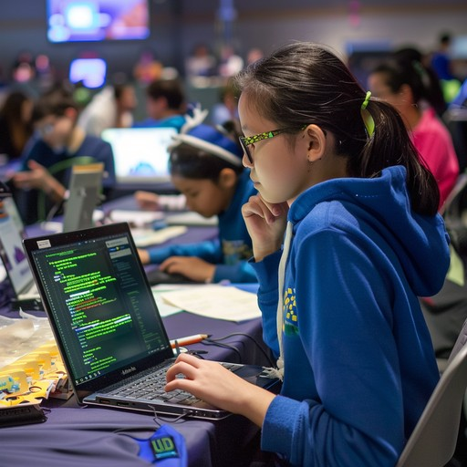

WEB DESIGN
Personal Portfolio
A personal website showcasing my skills, interests, and work.
Based in Rwanda · Open to opportunities
Hi, I'm Akaliza — a junior front-end developer creating responsive, easy-to-use digital experiences with clean code and care.
A bit about me
I'm a junior front-end developer skilled in HTML, CSS, JavaScript, and React. I’m studying IT Networking at UNILAK and have completed Cyber Security training at RP College.
Based in Rwanda, I’m open to remote opportunities and excited by technology, networking, and building useful, welcoming digital experiences.
Selected work
A few snapshots from my journey in technology and design.
WEB DESIGN
A personal website showcasing my skills, interests, and work.

TECHNOLOGY
An exploration of technology, creative learning, and coding.
IT NETWORKING
My growing interest in the systems that bring people and technology together.
Have a project in mind?
I’m open to opportunities, collaborations, and conversations about technology.
Open to opportunities